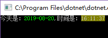
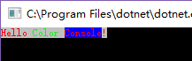

我们在开发过程中，经常需要将信息用不同的颜色标记出来，这可以让我们快速关注到重点信息。想必大家都知道，可以通过Console. ForegroundColor设置输出文字的颜色，背景颜色可以通过Console. BackgroundColor去改变。但实际使用起来却非常繁琐。每输出一段文字就得改变一次颜色，否则整版都是一个色，不能突出重点。
最近发现一个叫Shotgun.ColorConsole的库类，可以避免这种糟糕的情况 。ColorConsole使用颜色标记的方式去控制Console的颜色输出，从而避免了像原生的Console一样反复修改颜色属性。例如：
Shotgun.ColorConsole.ColorConsole.WriteLine("$R The foreground color is red");等效于:
var old=Console.ForegroundColor;
Console.ForegroundColor=Console.Red;
Console.WriteLine("The foreground color is red");
Console.ForegroundColor=old;通过以上代码的展示相信你已经猜到了，$R是用来控制输出文字的颜色。事实上也的确如此。在默认情况下使用“$”标识修改前景色，“@”标识修改背影色，紧跟在标记后面一个字符则表示颜色值，如上例中的R则代表ConsoleColor.Red。
ColorConsole的颜色控制语法有两种，一种是整体颜色标识；另一种则是区间颜色标识。
整体颜色标识：
这种标识没有结束标记，通常自标识起至结束颜色都是一样的，除非又使了其他的颜色标识。本文第一个示例使用的就是这种语法。
区间颜色标识：
在整体颜色标识基础上增加一对中括号就成了区间颜色标识。中括号内的文字将以指定的颜色显示，括号外的文字将用原来的颜色显示。而且括号还可以多层的嵌套。
//区间颜色输出控制
ColorConsole.WriteLine("今天是：$G[{0:yyyy-MM-dd}],时间是：@y[{0:HH:mm:ss}]",DateTime.Now);
ColorConsole还提供了注入方法，这可以让System.Console支持这种有颜色的语法。
ColorConsole.Inject();
Console.WriteLine("@w$R Hello $G[Color] @B[Console]!");
颜色语法中的色值与ConsoleColor按以下关系进行映射（小写表示Drak Color）：
有需要的同学可以通过以下两种方式获取：
GitHub：https://github.com/cbanor/ColorConsole
NuGet - Package Manager : Install-Package Shotgun.ColorConsole